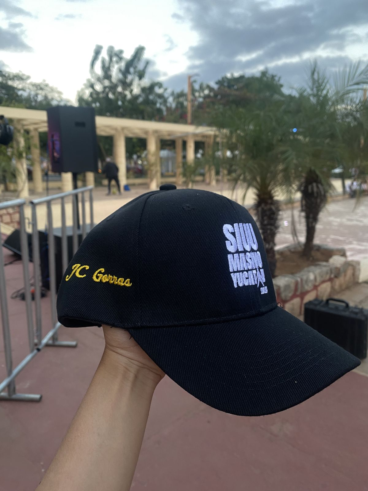
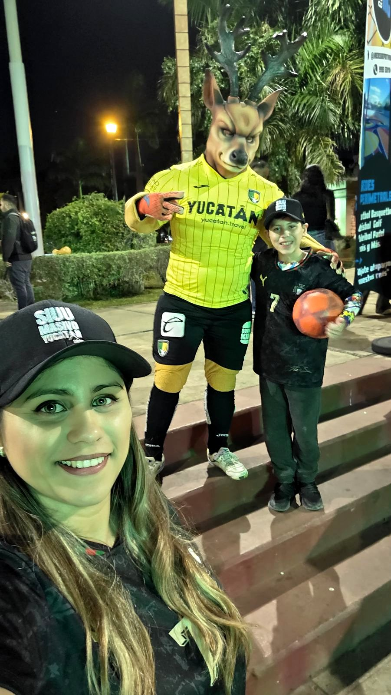
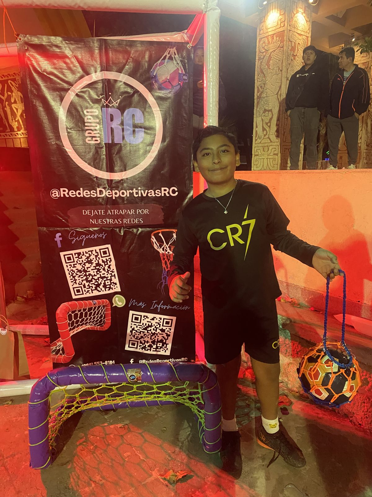

Por Reinier Coral · fundador de Grupo RC y organizador del evento
Por Reinier Coral · fundador de Grupo RC y organizador del evento
Volver a gritarlo
Después del Siuu Masivo 2025, la gente y la prensa nos pidieron otro, mejor preparado. Así que el 5 de febrero de 2026, día del cumpleaños 41 de Cristiano Ronaldo, regresamos al Parque de las Américas. Esta vez Redes Deportivas RC estuvo a cargo de la organización general: porterías, bolsas baloneras, dinámicas y premios para que el fútbol no parara.

La lluvia no paró la fiesta
Ese día llovió y no llegó tanta gente como en 2025. Lo decimos tal cual. Pero los que llegaron vivieron una edición con más invitados: Venardo, la mascota de los Venados de Yucatán, abrió el Salto del Bicho, y Tony Nusa, productor y conductor de radio, fue el juez del CR7 Freestyle.
También llegaron creadores de contenido de Yucatán, con Julio Leal como el más conocido y Yucabiker, creador de contenido de motos, a gritar el Siuu con todos.

En el freestyle, Tony eligió al ganador por creatividad, control del balón y conexión con el público.
Los premios fueron de Grupo RC
Cada reto se llevó balón y bolsa balonera RC. Los ganadores se tomaron la foto frente a nuestra portería de premiación, con el banner de Redes Deportivas RC detrás: el mejor recuerdo de que el fútbol se vive en la cancha.

El cierre
Mañanitas para Cristiano, conteo regresivo, un video con su mensaje y el grito masivo de Siuu con "Seven Nation Army" de fondo. Al final, el agradecimiento a todas las familias que llegaron aunque el clima no ayudó.